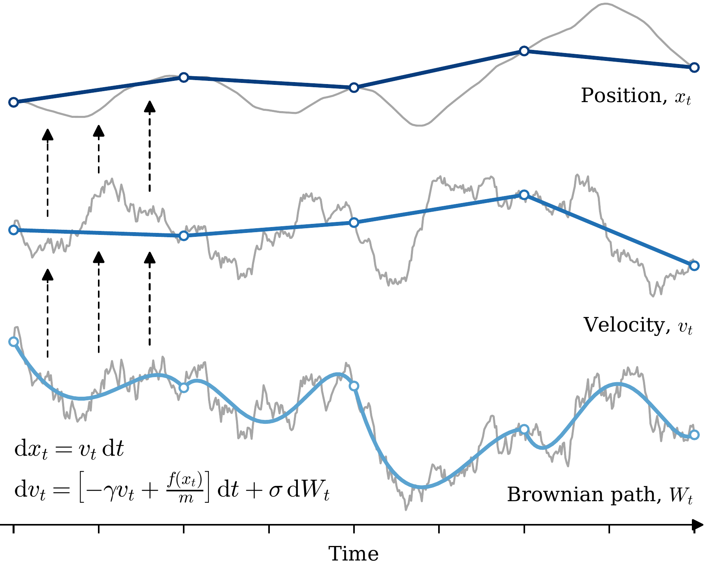
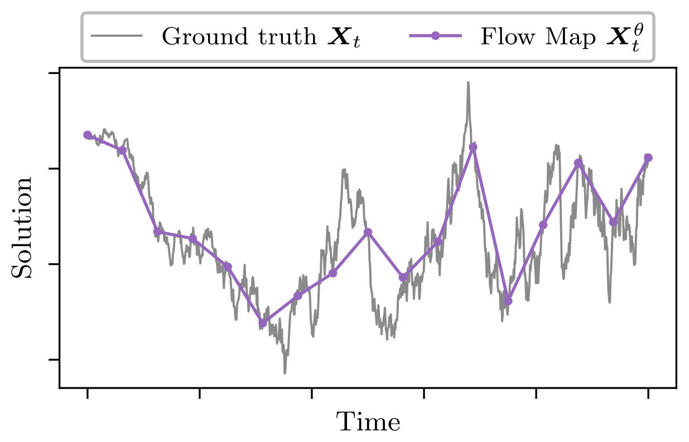

I'm a PhD student in Mathematics at the University of Bath, working with James Foster.
I am interested in the combination of differential equations and machine learning. This has included efficient backpropagation algorithms for neural differential equations and extending flow map methods to SDEs.
Molecular dynamics simulations proceed by integrating the Langevin equations
over many small femtosecond timesteps. This poses a challenge for estimating
ensemble properties and transition dynamics that occur on much longer timescales.
This work introduces Langevin Flow Maps which extend machine-learned force-fields to
additionally learn the stochastic Langevin integrator, enabling large-timestep molecular
dynamics.

Flow and diffusion models generate high-quality samples in many modalities; however, many network
evaluations are required during inference due to numerical integration of an underlying differential equation.
This work introduces Strong Stochastic Flow Maps as a framework for learning the strong solution map of SDEs,
directly generalizing deterministic flow maps to the stochastic setting.
